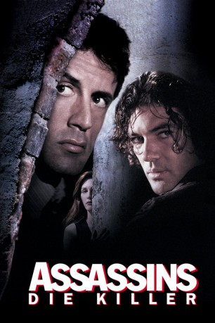

#3547 Assassins - Die Killer
Alternativ: Assassins
 
 IMDB-Wertung: 6.3 / 10
IMDB-Wertung: 6.3 / 10  Metascore: 0
Metascore: 0 
Der Profikiller Robert Rath ist der beste seiner Zunft. Wer einen sicheren Auftrag ausführen lassen will, der engagiert ihn. Aber nicht nur Raths Fähigkeiten haben ihm den Spitzenplatz gesichert. Vor 15 Jahren hat er seinen Ausbilder ins Jenseits befördert, um selbst das große Geschäft machen zu können. Seitdem lebt Rath mit dieser Schuld. Mittlerweile plant er seine Karriere als Auftragsmörder an den Nagel zu hängen und nach einem letzten Job aussteigen. Aber natürlich läuft der ganz anders ab, als er sich das vorgestellt hat. Denn auf einmal taucht ein jüngerer Killer auf und erledigt seine Zielperson. Wütend macht sich Rath auf die Suche nach dem Schützen, denn das will er nicht auf sich sitzen lassen. Sein Konkurrent ist der durchgeknallte Miguel Bain, der unbedingt die Nummer Eins in seinem Gewerbe werden möchte und es deswegen auf den gealterte Profi abgesehen hat. Jetzt muss Rath beweisen, dass er noch längst nicht zum alten Eisen gehört und um sein eigenes Leben kämpfen.
Jahr: 1995
Dauer: 132 Minuten
FSK: 16
Land: Frankreich Studio: Warner Home VideoTonspuren:
Untertitel:
Auflösung: 720p (1280x720) Größe: 3768 MB
Genre: Action, Thriller, Krimi
Regisseur:  Richard Donner
Richard Donner
Drehbuch: John Grisham
Soundtrack:
Darsteller:
 Sylvester Stallone als Robert Rath
Sylvester Stallone als Robert Rath Antonio Banderas als Miguel Bain
Antonio Banderas als Miguel Bain Julianne Moore als Electra
Julianne Moore als Electra Muse Watson als Ketcham
Muse Watson als Ketcham- Kelly Rowan als Jennifer, Electra's Neighbor
 Reed Diamond als Bob
Reed Diamond als Bob Stephen Liska als Cop
Stephen Liska als Cop Marian Collier als Eugene & Danny's Pet Supply Lady
Marian Collier als Eugene & Danny's Pet Supply Lady Anibal O. Lleras als Cabbie
Anibal O. Lleras als Cabbie- Wally Dalton als Priest
 Fulvio Cecere als Cop
Fulvio Cecere als Cop- David 'Shark' Fralick als Buyer with Remy
 Bob Minor als Cop
Bob Minor als Cop- Michael Taylor Donovan als Mariott Hotel Business Man , uncredited
- Barbara Anne Klein als Cop , uncredited
 Erik L. Nelson als Building Engineer , uncredited
Erik L. Nelson als Building Engineer , uncredited- Rey-Phillip Santos als Monorail Passenger , uncredited
- Anatoli Davydov als Nicolai Tashlinkov
 Steve Kahan als Alan Branch
Steve Kahan als Alan Branch- Kai Wulff als Remy
- Kerry Skalsky als Buyer with Remy
- James Douglas Haskins als Buyer with Remy
- John Harms als Cop
- Edward J. Rosen als Cemetery Caretaker
- Christina Orchid als Dowager
- Bruce R. Orchid als Cabbie
- James Oliver als Customs Officer
- Sue Carolyn Wise als Obnoxious Woman in Elevator
- Ron Ben Jarrett als Maintenance Man at Marriott Hotel
- Dave Young als Male Guard
- Ragna Sigrun als Female Guard
- Mark Woodford als Room Service Waiter
- Marta Labatut als Cemetery Woman
- Choco Orta als Cemetery Woman
- Ivonne Piazza als Bank Teller
- Ángel Vázquez als Bank Official
- Axel Anderson als Bank President
- David Dollase als Bodyguard
- Jim Graham als Bodyguard
- Paul Tuerpe als Reporter #1
- John Procaccino als Reporter #2
- Nerissa E. Williams als Reporter #3
- Juan Manuel Lebrón als Puerto Rican Cafe Waiter
- Eddie Bellaflores als Fruit Vendor
- Thomas Helgeland als Soloist
- James W. Gavin als Police Helicopter Pilot
- Scott Stuber als Parking Attendant at Marriott Hotel
- Richard Blum als Watcher
- Michael DeCourcey als Cabbie
- Whitey Shapiro als Cop
Datei: X:\1995\Assassins - Die Killer (1995, FSK16, 1280x720).mkv seit 28.04.2016
Festplatte: HD 1992-1995
 Es gibt insgesamt 85 Filme in der Gruppe '1995'
Es gibt insgesamt 85 Filme in der Gruppe '1995'